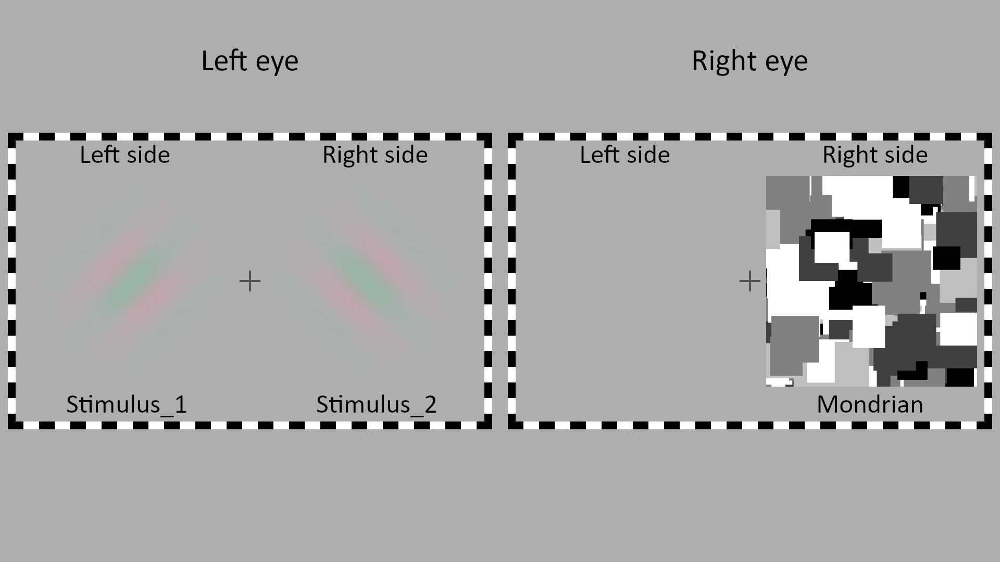
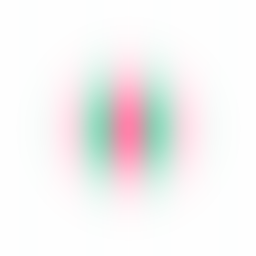
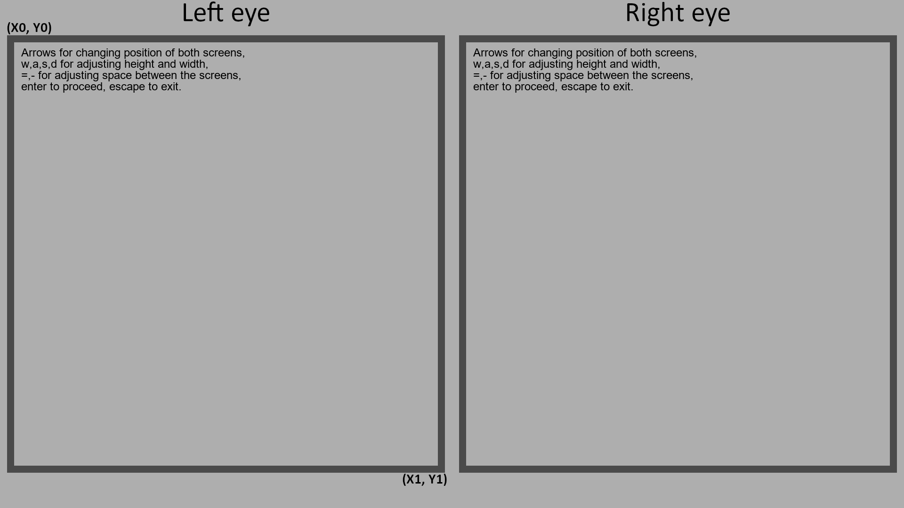
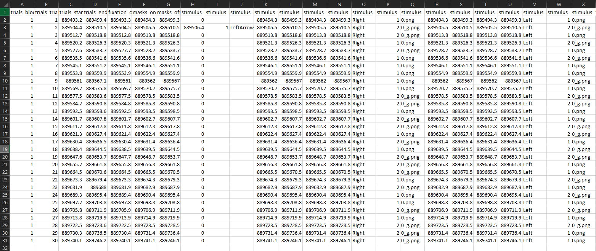
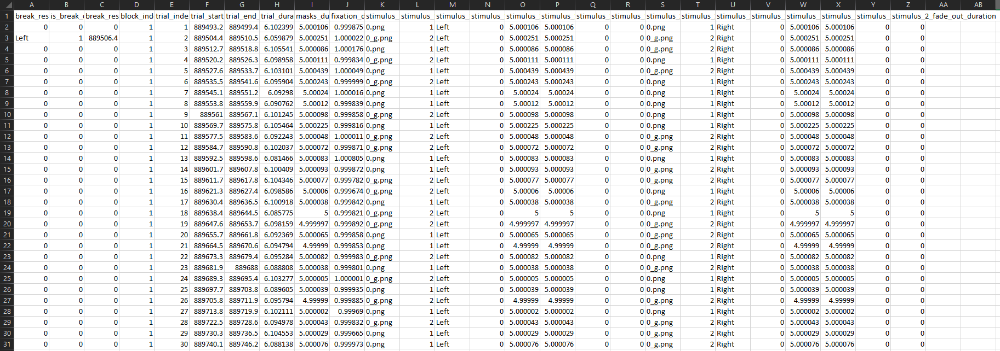

CFS tutorial#
Author: Gennadiy Belonosov <gennadiyb@mail.tau.ac.il>
💡 Here we explain how to use the CFSVM package to create a CFS experiment. As a reference, we roughly implemented Experiment 2 from the original Tsuchiya and Koch study.
Start from installing the package#
A word of caution#
This tutorial is only intended to present the potential use and some functions of the package.
An exact replication of the original Tsuchiya & Koch experiments is possible, but requires deeper modifications of the code, which are not discussed here.
For simplicity, Gabor patch parameters such as spatial frequency, luminance etc. are ignored.
The Gabor patches were generated here.
Extracting parameters from Tsuchiya & Koch’s experiment #2#
|
|---|
Methods figure from Tsuchiya & Koch, 2005 |

 |
|---|
Implementation using the package: an example of the stimuli and the display. The left eye is presented with two gratings at different orientations. The right eye is presented with the CFS Mondrian display and a blank screen. |
We extracted the following parameters from the Methods section and Supplementary Table 1 of the paper:
The contrast of two Gabor patches was set to 30%.
The phase and orientation of the Gabors were chosen randomly.
The flashing frequency of the Mondrians was 10 Hz.
Adaptation continued for 5 seconds.
After the adaptation a gray background was shown.
In 20 experimental trials two Gabor patches were simultaneously shown on both the left and right sides of the display presented to the left eye (see figure above).
In 10 catch trials, a Gabor patch was presented only on the non-suppressed side of the display (e.g., if the Mondrians are presented on the right side, as in the figure above, only the left side Gabor will be presented).
The 10 catch trials were randomly interleaved with the 20 experimental trials.
Preparing the experiment#
💡 The following section explains how to use the package to program your experiment.
Create the experiment folder#
We will organize the experiment according to the HLC lab handbook. The initial folder structure will look like this (only relevant for this tutorial folders are shown):
TnK_experiment_2/
├── Experiment/
│ └── RUN_ME/
| ├── Code/
| └── Stimuli/
└── Raw Data/
└── Behavioral/
Stimuli#
Create a new folder called Suppressed/ inside the Stimuli/ and put in it two Gabor images with transparent backgrounds and opposite phases, like these:
 
Your RUN_ME folder structure should now look somewhat like this:
RUN_ME/
├── Code/
└── Stimuli/
└── Suppressed/
├── gabor_1.png
└── gabor_2.png
Trial matrix#
We will start by generating a list of trials specifying the experimental conditions.
Navigate to the
Code/folder in the MATLAB files panel (or using thecdcommand).To generate trials:
You can either use the example script TnK_generate_trials (simply run it in the MATLAB command window, it will generate the trial matrix for this specific experiment) and navigate to the last step (or two) before the run section in this tutorial.
Or you can create your own generate_trials.m file based on your needs. If you follow this way, your
RUN_MEfolder structure will now look like this:
RUN_ME/
├── Code/
| └── generate_trials.m
└── Stimuli/
└── Suppressed/
├── gabor_1.png
└── gabor_2.png
💡 The main idea of this script is to create an experiment object for each trial and save it in one .mat file. Let’s go over the script command by command.
Import the package#
import CFSVM.Experiment.* ...
CFSVM.Element.Screen.* ...
CFSVM.Element.Data.* ...
CFSVM.Element.Evidence.* ...
CFSVM.Element.Stimulus.*
Choose the experiment type#
There are two types of CFS experiment in the package: BCFS (breaking CFS) and VPCFS (visual priming CFS). The two types have many common properties, as they are both Continuous Flash Suppression, yet they are different from each other in the following ways:
The BCFS code includes a breakthrough property, which records the participant’s response during the time, indicating that she detected the stimulus. The trial then stops when this response is recorded.
The VPCFS code includes the mafc and pas properties which define the objective ( multiple-alternative forced choice) and subjective (perceptual awareness scale) measures of consciousness, respectively.
As in this experiment neither of mAFC or PAS is used, we will build the experiment with the BCFS template.
experiment = BCFS();
Initialize the object’s properties#
The BCFS template has multiple required properties:
Property |
Class |
|---|---|
screen |
CustomScreen |
subject_info |
SubjectData |
trials |
TrialsData |
fixation |
Fixation |
frame |
CheckFrame |
masks |
Mondrians |
breakthrough |
BreakResponse |
We will initialize only a few of them here: fixation, frame, masks, breakthrough. The remaining properties will be initialized at the start of the experiment. We will also add two dynamic properties for stimuli, representing two Gabor patches.
Checkframe#
As for the CheckFrame: although the frames don’t appear in the original experiment, we will use them here as it is a common practice in the HLC lab. We will set hex_colors to black and white (#000000 and #FFFFFF), checker_length to 30 pixels and checker_width to 15 pixels (checker is the small rectangle; the frame consists of multiple checkers).
experiment.frame = CheckFrame( ...
hex_colors={'#000000', '#FFFFFF'}, ...
checker_length=30, ...
checker_width=15);
Masks generation#
Next, we move on to the Mondrians. If you have pre-generated Mondrians, put them into RUN_ME/Stimuli/Masks/ folder and skip to the masks initialization. Otherwise, we will use the MondrianGenerator. Note that it provides only basic functionality. If you want to create spatially, temporally or orientationally filtered or phase scrambled masks, refer to the CFS crafter: (Wang & Han, 2022), GitHub.
Import the MondrianGenerator class and construct the generator object, using the code below. The generator will randomly locate a specific numbers of figures (defined as n_figures, 1000 by default) that are shaped in a specific manner (defined as type, which can be, for example, a rectangle, a circle or a rhombus; for more shapes check the documentation) with the minimum radius equal to x(y)_pixels×min_fraction and the maximum radius equal to x(y)_pixels×max_fraction inside the
provided_path/Masks/folder (hereStimuli/Masks/).
import CFSVM.Generators.MondrianGenerator
generator = MondrianGenerator( ...
'../Stimuli/', ... % Will generate Mondrians inside path/Masks/
type='rectangle', ... % Available shapes are ‘rectangle’, ‘square’, ‘ellipse’, ‘circle’, ‘rhombus’ and ‘45_rotated_square’.
x_pixels=512, ... % Width of generated images in pixels
y_pixels=512, ... % Height of generated images in pixels
min_fraction=1/20, ... % Minimal possible radius of a figure.
max_fraction=1/8, ... % Maximal possible radius of a figure.
n_figures=1000,
cmap='grayscale' % Can be either string or MATLAB-styled RGB array.
);
For the colormap use the cmap argument from the code above. It can be either a string for the supported colormaps (‘grayscale’, ‘rgb’, ‘original’ etc., for other options refer to the documentation) or you can provide the argument with the MATLAB-formatted RGB array. For the grayscale with 5 tones it will look something like this:
cmap = [0 0 0;
0.25 0.25 0.25 ;
0.5 0.5 0.5;
0.75 0.75 0.75;
1 1 1]
In addition, you can use the set_shades() method if you want to use grayscale with different numbers of tones. set_shades() will take the RGB array as a first argument and create a gradient from this color to white with a number of tones provided as a second argument. In the code below it creates a gradient from black to white with 8 tones, i.e., black, white and 6 tones in between.
generator.set_shades([0,0,0], 8);
We will provide the generator object with the physical properties of the display, so it will be able to calculate the power spectral densities of the Mondrians (the output .png and .csv files will be saved inside the
provided_path/folder). The arguments are: width in cm, width in pixels, height in cm, height in pixels, viewing distance in cm.
generator.set_physical_properties(60, 1920, 33.5, 1080, 45)
Now we will run the generator using the generate() method, which takes n_mondrians as an argument. In general, n_mondrians=temporal_frequency×duration will generate enough masks, so that they are not repeated in a single trial. Here we will generate 10Hz*5sec=50 Mondrians.
generator.generate(50)
Masks initialization#
Now, with generated Mondrians, we will set the masks property.
The first parameter we will define is the relative path to the folder containing the Mondrian images. If you’d like to work with CFS-crafter generated masks, you can set a path to the .mat file using crafter_masks argument (crafter_masks will override the dirpath if both have been provided).
We will set temporal_frequency to 10 Hz, duration to 5 seconds, and position to “Right” (so that the masks suppress only the right Gabor patch).
To adjust the Mondrians’ position, we will set size to 0.45 (1 will fill the whole right eye field, 0.5 will fill half of the right eye field depending on position), padding to 0.3 (0 will align to the frame, 1 will align to the center of the fixation cross), and xy_ratio to 1 (square). You can also change the contrast and rotation if desired.
Finally, we will set blank to 5 seconds, to present a blank screen with fixation crosses and frames after the CFS stimulation has ended.
experiment.masks = Mondrians( ...
dirpath='../Stimuli/Masks', ...
temporal_frequency=10, ...
duration=5, ...
position="Right", ...
size=0.45, ...
padding=0.3, ...
xy_ratio=1, ...
contrast=1, ...
rotation=0,
blank=5);
Fixation generator#
Fixation target also has its own generator, you can find a tutorial on how to use it here. There are multiple available shapes mainly based on Thaler et al., 2013. Here we will generate the simplest cross:
import CFSVM.Generators.FixationGenerator
generator = FixationGenerator( ...
'../Stimuli/', ...
radius=256, ...
hex_color='#000000', ...
is_smooth_edges=true, ...
smoothing_cycles=5);
generator.C(cross_width=64)
Fixation#
To initialize the fixation property we will first provide a directory which contains our generated fixation target, second, we will set duration to 1 second and size to 0.05 (5%) of the frame. It also has additional parameters, like rotation, contrast etc. (for more, please, check the documentation), which we won’t set here.
experiment.fixation = Fixation( ...
'../Stimuli/Fixation', ...
duration=1, ...
size=0.05);
Stimuli#
Now we will add two stimuli properties for the Gabor patches.
Create the properties first:
experiment.addprop('stimulus_1');
experiment.addprop('stimulus_2');
Then we will initialize them. As a first parameter we will provide a path to the folder with two Gabors that we presented here earlier.
We will set show_duration for both of the parameters to 5 seconds. We will set a different position for them: “Left” for the first and “Right” for the second. We will set contrast to 0.3 (30%), size to 0.5, padding to 0.5 and xy_ratio to 1.
experiment.stimulus_1 = SuppressedStimulus( ...
'../Stimuli/Suppressed/', ...
show_duration=5, ...
position="Left", ...
contrast=0.3, ...
size=0.5, ...
padding=0.5, ...
xy_ratio=1);
experiment.stimulus_2 = SuppressedStimulus( ...
'../Stimuli/Suppressed/', ...
show_duration=5, ...
position="Right", ...
contrast=0.3, ...
size=0.5, ...
padding=0.5, ...
xy_ratio=1);
Breakthrough#
Here you can set the parameters for the breakthrough property, which basically records the time and the key pressed by the participant. This is not very relevant for our needs here, so we will just initialize it and move on.
experiment.breakthrough = BreakResponse();
Our experiment object is ready now. Let’s set the number of blocks and trials. The number of blocks should be a natural number and the number of trials is defined by a list of length=n_blocks containing the number of trials in every block. For example, if we want to have one block with 20 trials and another block with 30 trials we will set n_blocks = 2, n_trials = [20, 30]. But in the current experiment, there is only one block with 30 trials.
The last line will initialize a cell array for the trial matrix.
n_blocks = 1;
n_trials = [30];
trial_matrix = cell(1, n_blocks);
Now, for all 30 trials we will create a copy of our experiment object, randomize the Gabor images and their orientations for both stimuli properties in this copied object and then add the object to the trial matrix for every trial (as the code that runs the experiment will expect trial matrix to be an array of arrays of objects).
For 10 of these 30 trials we will set the contrast for the second stimulus to 0, so that the right Gabor doesn’t appear.
After every block (here we have only one), we will shuffle the trials.
orientations = [0, 45, 90, 135];
n_images = 2;
for block = 1:n_blocks
for trial = 1:n_trials(block)
exp_copy = copy(experiment);
exp_copy.stimulus_1.index = randi(n_images);
exp_copy.stimulus_1.rotation = orientations(randi(length(orientations), 1));
exp_copy.stimulus_2.index = randi(n_images);
exp_copy.stimulus_2.rotation = orientations(randi(length(orientations), 1));
if trial >= 20
exp_copy.stimulus_2.contrast = 0;
end
trial_matrix{block}{trial} = exp_copy;
end
trial_matrix{1} = trial_matrix{1}(randperm(numel(trial_matrix{1})));
end
Save the trial matrix to the file:
if ~exist('../TrialMatrix', 'dir')
mkdir('../TrialMatrix')
end
save('../TrialMatrix/experiment.mat', 'trial_matrix')
Don’t forget to execute the code before running the experiment! After executing it you will find the file with the trial matrix in the RUN_ME/TrialMatrix/ directory and generated Mondrians in the RUN_ME/Stimuli/Masks/.
Your RUN_ME folder structure now should look like this :
RUN_ME/
├── Code/
| ├── generate_trials.m
| └── main.m
├── Stimuli/
| ├── Suppressed/
| | ├── gabor_1.png
| | └── gabor_2.png
| └── Masks/
| ├── mondrian_1.png
| | ⋮ ⋮ ⋮ ⋮
| └── mondrian_<n>.png
└── TrialMatrix/
└──experiment.mat
Congrats! We are almost there!
The last step (or two) before the run#
Customizing the instructions#
The CFSVM package comes with generic functions for instruction screens, like introduction, farewell etc., allowing you to test your experiment without paying too much attention to these screens. But when the time comes and you want to modify them, you can do it fairly easily by creating your own functions and giving a path to them to the code. If you want to use the generic function as a template, you can find them on GitHub or you can write the functions completely from scratch.
There are some restrictions allowing for the seamless injection of these functions to the main code:
They should be put inside one folder. Here we will create a
Code/instructions/folder and put all the functions there.Every type of instruction should be in its own
.mfile and have one of the following names:introduction.mfor the introduction screen shown once before the beginning of the experiment.block_introduction_1.mtoblock_introduction_n.mwherenis the number of blocks in your experiment.rest.mfor the screen shown after each trial.farewell.mfor the screen at the end of the experiment.
The functions can’t use their own
Screen('Flip'), meaning that they can show only one screen.The function should take exactly two arguments: one for the PsychToolBox window pointer and one for the [x0,y0,x1,y1] array describing the pixels of a screen field you should put your text into (if you are using two screen fields like we do in this tutorial, every function will run two times: one time for each screen field). The function should return only one variable for the key the subject should press to proceed. The key should be a char array; you can use KbName or KbDemo to find the exact name of the key.
Writing main.m#
So far we’ve generated the trials. Now we want to run the experiment.
Let’s start building our main.m script, which we will put inside the Code/ folder near the generate_trials.m script.
We will now go over a few parameters that can be adjusted to create specific settings you want.
First, we will make sure that the workspace and the screen are cleared:
Screen('CloseAll');
close all;
clear;
Import parts of the package we will use here:
import CFSVM.Experiment.* ...
CFSVM.Element.Screen.* ...
CFSVM.Element.Data.*
Initialize the BCFS object and provide it with the save_to_dir - path to the folder you want the results to be saved. According to the lab handbook this will be Raw Data/Behavioral/. If you created your own instruction functions you can pass the folder containing these functions to the path_to_functions argument .
experiment = BCFS(save_to_dir='../../../Raw Data/Behavioral');
Initialize the subject_info property by providing a directory to save the info in.
We will put it in Tnk_experiment_2/Raw Data/Demographics/.
experiment.subject_info = SubjectData( ...
dirpath='../../../Raw Data/Demographics');
Initialize trials property by providing a path to the already generated file with the trial matrix.
experiment.trials = TrialsData( ...
filepath='../TrialMatrix/experiment.mat');

Initialize the screen property by setting is_stereo to true and defining the size and location of the left rectangle by providing initial_rect with pixel coordinates of its upper left and lower right vertices, like this: [x0,y0, x1, y1]. The first two numbers in this array are x and y pixels of the upper left vertex, the last two numbers are x and y pixels of the lower right vertex. The right rectangle will be set symmetrically to the left one.
We will also provide hex code for the background color - #AEAEAE gray here.
experiment.screen = CustomScreen( ...
is_stereo=true, ...
initial_rect=[30, 90, 930, 990], ...
background_color='#AEAEAE');
The last two lines of code are quite self explanatory:
experiment.run()
Screen('CloseAll')
That’s it! You can run the main.m script now!
Running the experiment#
Right after executing the script you’ll see the dialogue for collecting the subject data:
>> main
Subject code
> HZ4
Date of birth
> 01011900
Dominant eye
> Right
Dominant hand
> Both
Now you will proceed to the experiment itself.
And that’s it! Once you’ve adjusted the screens, you’ll see the introduction screen. After that, the CFS will begin.
The data#
The raw trial data will appear in the Tnk_experiment_2/Raw Data/Behavioral/RawTrials/. Every .mat file will contain an experiment object similar to the ones we have generated while creating the trial matrix, but containing timings and subject responses.
You can run CFSVM.extract_from_raw_cfs(path_to_raw_trials)
(../../../Raw Data/Behavioral/RawTrials in this example) script to extract the data from the raw files. It will create two csv tables in Behavioral/Extracted/<subject code>/ and Behavioral/Processed/ folders, the first one containing raw timings and the second one processed ones (e.g., durations instead of onsets and offsets).
The final folder structure will look like this:
TnK_experiment_2/
├── Experiment/
│ └── RUN_ME/
| ├── Code/
| | ├── generate_trials.m
| | └── main.m
| ├── Stimuli/
| | ├── Suppressed/
| | | ├── gabor_1.png
| | | └── gabor_2.png
| | └── Masks/
| | ├── mondrian_1.png
| | | ⋮ ⋮ ⋮ ⋮
| | └── mondrian_<n>.png
| └── TrialMatrix/
| └──experiment.mat
└── Raw Data/
├── Demographics/
| └── HZ4.csv
└── Behavioral/
├── Raw Trials/
| └── HZ4/
| ├── block1_trial1.mat
| | ⋮ ⋮ ⋮ ⋮
| └── block<n>_trial<m>.mat
├── Extracted/
| └── HZ4/
| ├── HZ4_extracted.csv
| └── HZ4_ifis_histogram.png
└── Processed/
└── HZ4_processed.csv
|
|---|
Raw trials |

 |
|---|
Extracted, not processed csv |
 |
|---|
Processed csv |